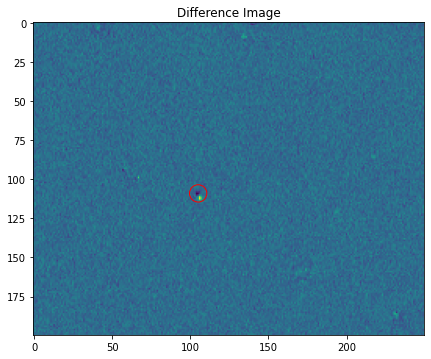
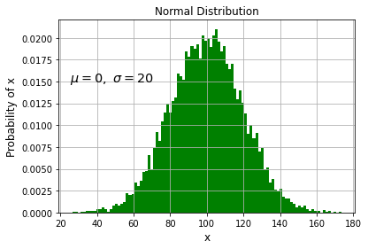
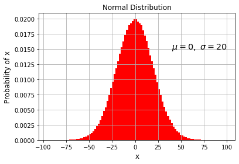
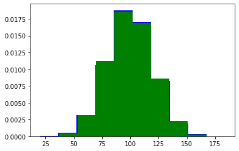

%pylab inline
import numpy as np
import matplotlib.pyplot as plt
Populating the interactive namespace from numpy and matplotlib
img1 = np.loadtxt('starfield_exp1.txt')
img2 = np.loadtxt('starfield_exp2.txt')
# If the asteroid is in the middle of the image, get the
# coordinates of the middle of the image
#xMid = img1.shape[0] / 2
#yMid = img1.shape[1] / 2
#print(xMid,yMid)
#plt.scatter(xMid, yMid, color='k', marker='o', s=100, facecolors='none')
plt.figure(figsize=(10,10))
# Side-by-side plots!
# Subplot values: (number of rows, number of columns, plot number)
plt.subplot(1, 2, 1)
plt.imshow(img1)
plt.title('Exposure 1')
# overplot a circle around the asteroid
plt.scatter(105, 110, color='k', marker='o', s=400, facecolors='none') # Hollow points of size = 100
plt.subplot(1, 2, 2)
plt.imshow(img2)
plt.title('Exposure 2')
# overplot a circle around the asteroid
plt.scatter(105, 110, color='k', marker='o', s=400, facecolors='none') # Hollow points of size = 100
plt.show()
---------------------------------------------------------------------------
OSError Traceback (most recent call last)
<ipython-input-2-2b0015a7b8f0> in <module>
----> 1 img1 = np.loadtxt('starfield_exp1.txt')
2 img2 = np.loadtxt('starfield_exp2.txt')
3
4 # If the asteroid is in the middle of the image, get the
5 # coordinates of the middle of the image
~/anaconda3/lib/python3.7/site-packages/numpy/lib/npyio.py in loadtxt(fname, dtype, comments, delimiter, converters, skiprows, usecols, unpack, ndmin, encoding, max_rows, like)
1065 fname = os_fspath(fname)
1066 if _is_string_like(fname):
-> 1067 fh = np.lib._datasource.open(fname, 'rt', encoding=encoding)
1068 fencoding = getattr(fh, 'encoding', 'latin1')
1069 fh = iter(fh)
~/anaconda3/lib/python3.7/site-packages/numpy/lib/_datasource.py in open(path, mode, destpath, encoding, newline)
191
192 ds = DataSource(destpath)
--> 193 return ds.open(path, mode, encoding=encoding, newline=newline)
194
195
~/anaconda3/lib/python3.7/site-packages/numpy/lib/_datasource.py in open(self, path, mode, encoding, newline)
531 encoding=encoding, newline=newline)
532 else:
--> 533 raise IOError("%s not found." % path)
534
535
OSError: starfield_exp1.txt not found.
# Diff the images
img3 = img2 - img1
plt.figure(figsize=(7,7))
plt.imshow(img3)
plt.title('Difference Image')
plt.scatter(105,109, color='r', marker='o', s=300, facecolors='none')
plt.show()
# the next part doesn't work for this image. The minimum is not where the asteroid is.
# Get
#endpt = np.argwhere(img3 == img3.min())
#plt.scatter(endpt[0][0], endpt[0][1], color='r', marker='o', s=100, facecolors='none')

Q. When do we need to use random numbers in astronomy?#
Random Numbers#
“Drawing” random numbers#
import random
print(random.random())
print(random.random())
print(random.random())
0.4594611297345488
0.4276502021678109
0.6603698382743473
random.seed(2)
print(random.random())
random.seed(2)
print(random.random())
random.seed(2)
print(random.random())
0.9560342718892494
0.9560342718892494
0.9560342718892494
When we supply a specific seed to the random generator, we will get the same numbers every time we execute a program. That is useful when you need a predictable source of random numbers.
If you don’t initialize the pseudo-random number generator, then the random generator uses the current system time in miliseconds.
Q. If we need random numbers generated between 0 and 100 what could we do?#
print(100 * random.random())
print(100 * random.random())
print(100 * random.random())
94.78274870593494
5.655136772680869
8.487199515892163
print(random.uniform(1, 10))
9.530447383534144
import random
# Pick a seed:
random.seed(5)
# Let's have 1000 samples:
N = 1000
x = range(N)
# List comprehension to generate numbers between 1 and 100:
y = [random.uniform(0, 100) for _ in x]
plt.scatter(x, y)
<matplotlib.collections.PathCollection at 0x7fc11f6fd100>
random.seed(5)
N = 1000 # 1000 samples
x = range(N) # recall that 'range' gives us numbers 0-N
y = [random.uniform(0, 100) for _ in x]
# Now, plot a histogram of the data
#
# hist() returns:
# the number of values in each bin <array>
# the bin x-coord values <array>
# the patches <array>
#
# A Patch describes a bin geometrically
nArray, binArray, patchArray = plt.hist(y, bins=50, facecolor='g')
# Label the plot and add a grid for visualization:
plt.xlabel('Random Number')
plt.ylabel('Number of Occurances')
plt.grid(True)
# Print each returned value from hist()
print(nArray)
print()
print(binArray)
print()
print(patchArray)
print()
print("This is the patch array's 1st element: ",patchArray[0])
[21. 25. 26. 20. 23. 22. 19. 23. 19. 14. 17. 18. 17. 21. 27. 24. 11. 18.
31. 23. 17. 21. 17. 23. 24. 14. 16. 18. 18. 22. 21. 21. 19. 18. 21. 19.
22. 19. 22. 21. 15. 22. 13. 12. 18. 20. 23. 23. 26. 16.]
[4.39632140e-02 2.04168385e+00 4.03940448e+00 6.03712511e+00
8.03484574e+00 1.00325664e+01 1.20302870e+01 1.40280076e+01
1.60257283e+01 1.80234489e+01 2.00211695e+01 2.20188902e+01
2.40166108e+01 2.60143314e+01 2.80120521e+01 3.00097727e+01
3.20074933e+01 3.40052140e+01 3.60029346e+01 3.80006552e+01
3.99983759e+01 4.19960965e+01 4.39938171e+01 4.59915377e+01
4.79892584e+01 4.99869790e+01 5.19846996e+01 5.39824203e+01
5.59801409e+01 5.79778615e+01 5.99755822e+01 6.19733028e+01
6.39710234e+01 6.59687441e+01 6.79664647e+01 6.99641853e+01
7.19619060e+01 7.39596266e+01 7.59573472e+01 7.79550679e+01
7.99527885e+01 8.19505091e+01 8.39482298e+01 8.59459504e+01
8.79436710e+01 8.99413916e+01 9.19391123e+01 9.39368329e+01
9.59345535e+01 9.79322742e+01 9.99299948e+01]
<BarContainer object of 50 artists>
This is the patch array's 1st element: Rectangle(xy=(0.0439632, 0), width=1.99772, height=21, angle=0)
Q. Is the normalization about right? That is, how many samples (bins) are there?#
# Hint: What is the average number of hits
# in each bin and how many bins are there?
# nArray is the number of bins
print(len(nArray))
print(min(binArray))
print(max(binArray))
50
0.043963214000819484
99.9299948069468
import numpy as np
randUniArray = np.random.uniform(0, 10, size=10000) # Range from 0 to 10
# then change to 10000
print(randUniArray)
[6.46379331 3.881564 3.38343291 ... 1.84951915 2.97831736 9.55164428]
Q. What should the mean of all the numbers be?#
np.mean(randUniArray)
4.976827259846986
import numpy as np
mu = 100 # Average of 100
sigma = 20 # Standard deviation of 20
# randn = normal distribution (unity normalized by default)
randNormArray = mu + sigma * np.random.randn(10000)
# Q. What data type should randNormArray be?
type(randNormArray)
numpy.ndarray
# Histogram of the data:
#nArray, binArray, patchArray = pl.hist(randNormArray, 100, normed=True, facecolor='g')
plt.hist(randNormArray, 100, density=True, facecolor='g')
plt.xlabel('x', size='large')
plt.ylabel('Probability of x', size='large')
plt.title('Normal Distribution')
# 25,0.015 is the position on graph
plt.text(25, 0.015, r'$\mu=0,\ \sigma=20$', size='x-large')
plt.grid(True)

mu = 0
sigma = 20
randNormArray = mu + sigma * np.random.randn(1000000)
nArray, binArray, patchArray = plt.hist(randNormArray, 100, \
density=1, facecolor='r')
plt.xlabel('x', size='large')
plt.ylabel('Probability of x', size='large')
plt.title('Normal Distribution')
plt.text(40, .015, r'$\mu=0,\ \sigma=20$', size='x-large')
plt.grid(True)

mu = 100
sigma = 20
# Method #1
randNormArray1 = mu + sigma * np.random.randn(10000)
# Method #2
randNormArray2 = np.random.normal(size=10000, loc=mu, scale=sigma)
# Compare
_, _, _ = plt.hist(randNormArray1, color='b', density=1)
_, _, _ = plt.hist(randNormArray2, color='g', density=1)
